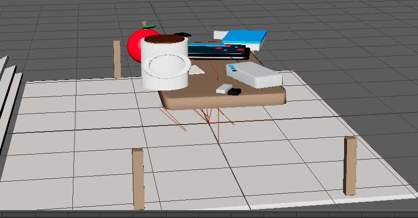
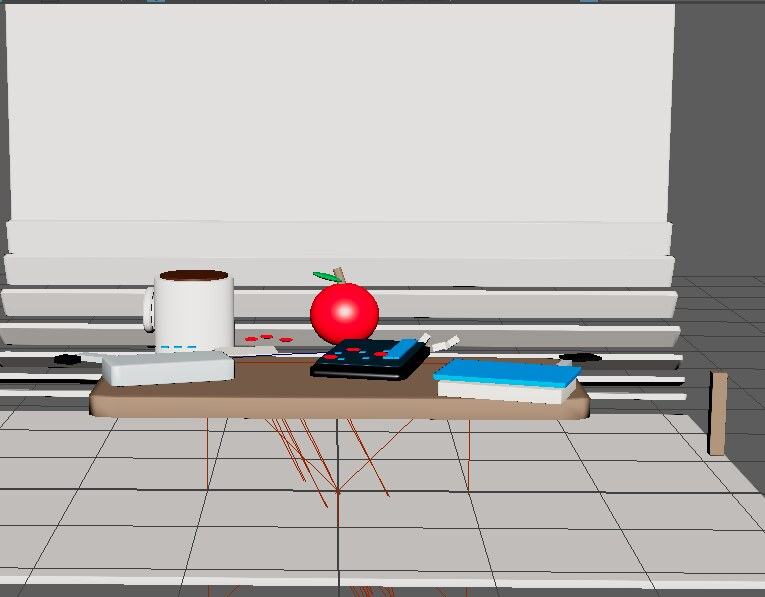
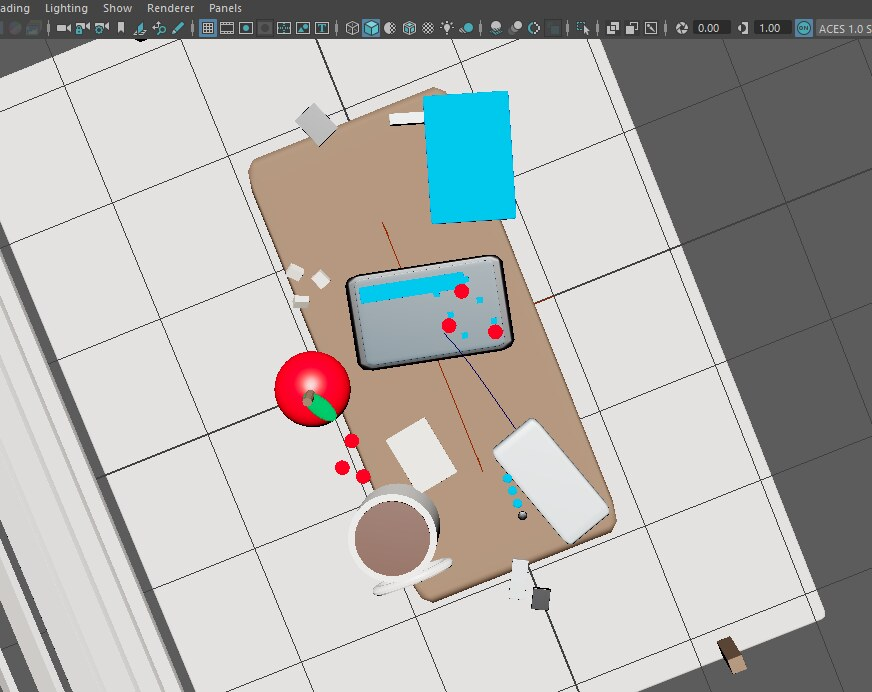
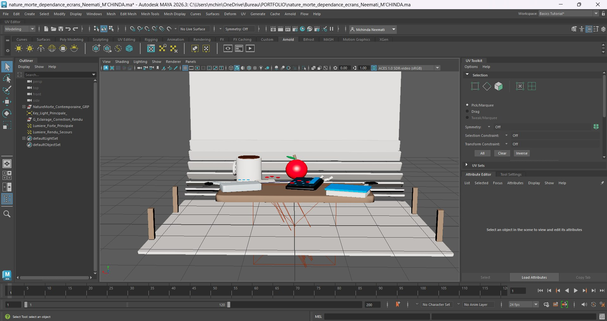

Nature morte — Dépendance aux écrans
Scène 3D modélisée sous Autodesk Maya explorant la thématique de l'addiction numérique à travers une nature morte contemporaine.

Démarche
Modélisation complète des objets, des matériaux et de l'éclairage d'une scène de nature morte contemporaine, pensée comme une métaphore visuelle de la dépendance aux écrans : un smartphone, une tablette et un ordinateur se mêlent aux objets du quotidien (mug, pomme, livre) sur une table.



Compétences mobilisées
Maya 3DModélisationNature morte
Fichier .ma disponible (Autodesk Maya 2026).